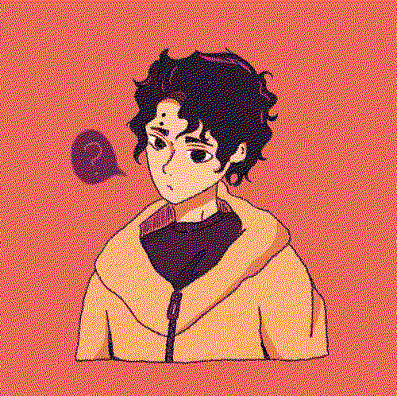

sometimes i doodle or make silly things. now they all have a home...

tried my hand at another aubrey with digital watercolor

finals week or my final week...?

aubrey omori.... some anger management therapy might be nice

my sweet jelly filled donut

an old doodle of yellmi in jorts!

a very old yellmi i drew a while back (uploading some old doodles i just found on my ipad)

redrew that meme again but this time with kirara from jujutsu kaisen ♡

i am obsessed with this crazy lady (yorozu from jujutsu kaisen)

illumi with he/him pronouns in his bio

this was for a school assignment but i'm really proud of it, so here's my description/analysis: Omar's pursuit of Warda is a form of enchantment of his mundane life to a certain extent. In the collage the woman is meant to represent Warda, and the frame plays an important role in how I understand how Omar sees her. Omar finds enchantment through the feelings of “longing, anticipation, the titillation of adventure” rather than Warda herself, which is why she is the center of attention in the collage but still confined within the frame (43). While he still looks to her for what he feels is missing form his monotonous life, it is ultimately not enough for Omar. He always wants what lies beyond the golden frame. The cut outs of the birds, the spaceship, and the banana with half a face to reflect the surrealism present in Omar’s narration.
collage depicting warda from the beggar by naguib mahfouz

i fucking love air conditioning.

kirara is thinking. what is he thinking about..

kaori pixel art

sakusa kiyoomi doodle

illumi and killua antics
this is thomas click to feed him